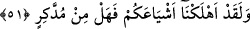

İbnu’ş-Şeyh demiştir ki; geçen âyet-i kerîme’ler, Mekke kâfirlerinin dünya ve âhirette
helâk edileceklerine dâir tehdidi, müminlerin de onlara karşı muzaffer olup intikam
alacakları vaadini kapsayınca: “Biz her şeyi bir ölçüye göre yarattık” (el-Kamer,
55/49) âyet-i kerîme’si bu vaad ve tehdidi pekiştirmek için getirildi. Yâni, bu âyet-i
kerîmelerde verilen vaad ve tehdidler haktır ve doğrudur. Allah katında tayin ve takdir
edilmiştir. Artıp eksilmez. Allah’a göre bu hiç de zor değildir. Çünkü, O’nun
muhlûkâttan bir şey yaratması gözün bir anlık bakışından daha hızlıdır.
Bazı âlimlerce âyet-i kerîme’nin mânâsı, “Kıyâmetin kopması ise, göz açıp kapama
gibi veya daha az bir zamandan ibarettir” (en-Nahl, 16/77) âyet-i kerîme’sinden
ibarettir, denilmiştir.
Bazı büyükler de demişlerdir ki, “kün!” kelimesinden maksad, kâf ile nûn harfleri
değil, varlıkların (eşyanın) ortaya çıkmasından ibaret olan mânâdır. Öyleyse “kün!”
kelimesi, anlayan için mânânın örtüsüdür. Her insanın içinde “kün” kuvvetine benzer bir
güç vardır. Görünürde ise mûtâd olandan başka bir şey yoktur. Âhirette ise “kün”
hükmü, onun, görünürde gücü olur. Allah bazı kimselere, Rasûlullah’a irsleri ve
bağlılıkları nedeniyle bu dünyada da bu gücü bazan verir. Nitekim Rasûl-i Ekrem (s.a.)
bu gücü çeşitli yerlerde kullanmıştır. Bunlardan biri Tebük Gazvesi’dir.
Sonra şüphesiz bu güç, meleklerden veya başka varlıklardan hiç birine verilmemiştir.
Çünkü bu niyâbet ve halifelik kendisinde dürülmüş olduğundan, insana mahsus bir
durumdur.
et-Te’vilâtü’n-Necmiyye adlı eserde, Bizim ulvîsi ve süflîsi ile eşyaya tecellîmiz,
onları nitelikleri bakımından içinde çokluk olmayan tekli hale getirmektedir. Ancak
kendisine tecellî edilene göre sıfatlar çoğalır. Yalnız onda, tek şekilde çoğalan
görüntüler ortaya çıkar. Büyükte büyüklük, küçükte küçüklük, uzunda uzunluk ve çember
durumunda olanda da yuvarlaklık vasfı ortaya çıkar. Esas şekil ise yaratıldığı durumda
hiç bir değişikliğe uğramadan kalır. Bir şeye bakan kişi bir bakışta gözünün hizâsına
geleni gördüğü gibi.
51. Andolsun biz, sizin benzerlerinizi hep helâk ettik. Düşünüp ibret alan yok
mu?
“Andolsun biz,” küfür ve inkârda “sizin benzerlerinizi hep helâk ettik.” Yâni diğer
milletlerden küfretmekteki benzerlerinizi mahvettik. Âyet-i kerîme’deki “eşyâ’”, şîa
kelimesinin çoğulu olup, Müfredât’ta da ifâde edildiği gibi insanın kendisinden güç alıp
yayıldığı ve çoğaldığı bir topluluktur. Kâmûs’a göre ise, kişinin tâbilerine, ardından
gidenlerine ve yardımcılarına “şîa” denir.
“Düşünüp ibret alan yok mudur?” Yâni bundan alacağı öğütle isyandan çekinip